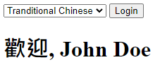

回到最一開始的需求，我們還希望這個 Library 可以支援 jQuery，接下來的課程將完成這個需求，並為這個 Library 提供一些更完整的建議
支援 jQuery
在前面的章節我們實作了許多方法，但目前都是將結果顯示在 console 中而已，接下來將會結合 jQuery 將結果顯示在 jQuery 取得的 DOM 上。
HTML
首先我們看到 HTML 的部分，有一組 select 來選擇語言，還有一個 input button 來觸發事件，最後有一組 h1 來顯示結果。
1
2
3
4
5
6
7
8
9
10
11
12
13
14
15
16
17
18
19
20
21
22
23
24
25
|
<!DOCTYPE html>
<html>
<head>
<meta charset="UTF-8" />
<title>Untitled Document</title>
</head>
<body>
<div id="logindev">
<select id="lang">
<option value="en">English</option>
<option value="zh-tw">Tranditional Chinese</option>
</select>
<input type="button" value="Login" id="login">
</div>
<h1 id="greeting"></h1>
<script src="js/jquery-3.6.0.js"></script>
<script src="js/greetr.js"></script>
<script src="js/app.js"></script>
</body>
</html>
|
新增方法
接下來透過在 prototype 新增一個方法來達到以下幾個目的:
- 判斷
jQuery 是否存在
- 取得
jQuery selector 所指定的 DOM 物件
- 呼叫的方法
- 將資料送到 HTML 中
- 維持
Method Chaining
1
2
3
4
5
6
7
8
9
10
11
12
13
14
15
16
17
| Greetr.prototype = {
HTMLGreeting: function(selector, formal) {
if (!$) throw ('jQuery not loaded !');
if (!selector) throw ('Missing jQuery selector !');
if (formal) msg = formalGreeting();
else msg = greeting();
$(selector).html(msg);
return this;
}
};
|
Library 應用
最後，我們來實際使用一下這個 Library，在選取語言後，按下 Login 按鈕，就會出現預期的結果了 !
1
2
3
4
5
6
7
8
9
10
11
|
$('#login').on('click', function() {
let loginGrtr = G$('John', 'Doe');
$('#logindiv').hide();
loginGrtr.setLang($('#lang').val()).HTMLGreeting('#greeting', true);
});
|

好的註解
JavaScript 是一門非常簡潔的程式語言，相同的目的也有很多不同的方法可以實現，但這也帶出了一個問題，那就是如果其他人甚至是之後的自己，再回來看先前的程式碼時，時常會因為這種語言特性導致不容易馬上透過程式碼了解結構細節，因此，好的註解就成了輔助我們閱讀程式碼的關鍵，在每次開發時，不仿多花點時間為複雜的程式碼加上清楚的註解吧 !
1
2
3
4
5
6
7
8
9
10
11
12
13
14
15
16
17
18
19
20
21
22
23
24
25
26
27
28
29
30
31
32
33
34
35
36
37
38
39
40
41
42
43
44
45
46
47
48
49
50
51
52
53
54
55
56
57
58
59
60
61
62
63
64
65
66
67
68
69
70
71
72
73
74
75
76
77
78
79
80
81
82
83
84
85
86
87
88
89
90
91
92
93
94
95
96
97
|
;(function (global, $) {
var Greetr = function (firstname, lastname, language) {
return new Greetr.init(firstname, lastname, language);
};
var supportedLangs = ['en', 'zh-tw'];
var greetings = {
en: 'Hello',
'zh-tw': '你好'
};
var formalGreetings = {
en: 'Greetings',
'zh-tw': '歡迎'
};
var logMessages = {
en: 'Logged in',
'zh-tw': '登入'
};
Greetr.prototype = {
fullName: function() {
return this.firstname + ' ' + this.lastname;
},
validate: function() {
if(supportedLangs.indexOf(this.language) === -1) {
throw 'Invalid language';
}
},
greeting: function() {
return greetings[this.language] + ' ' + this.firstname + '!';
},
formalGreeting: function() {
return formalGreetings[this.language] + ', ' + this.fullName();
},
greet: function(formal) {
var msg;
if (formal) msg = this.formalGreeting();
else msg = this.greeting();
if (console) console.log(msg);
return this;
},
log: function() {
if (console) {
console.log(logMessages[this.language] + ': ' + this.fullName());
}
return this;
},
setLang: function(lang) {
this.language = lang;
this.validate();
return this;
},
HTMLGreeting: function(selector, formal) {
if (!$) throw ('jQuery not loaded !');
if (!selector) throw ('Missing jQuery selector !');
if (formal) msg = this.formalGreeting();
else msg = this.greeting();
$(selector).html(msg);
return this;
}
};
Greetr.init = function(firstname, lastname, language) {
var self = this;
self.firstname = firstname || '';
self.lastname = lastname || '';
self.language = language || 'en';
}
Greetr.init.prototype = Greetr.prototype;
global.Greetr = global.G$ = Greetr;
})(window, jQuery);
|
於 Library 一開始加上一個分號
通常在開發時，我們會同時使用多個 Library，為了避免被前面的 Library 因為沒有使用分號 ; 結尾導致出現非預期的錯誤，我們可以在自己開發的 Library 最前面加上一個分號。
1
2
3
4
5
6
7
|
;(function() {
})();
|
資料來源
Udemy-JavaScript: Understanding the Weird Parts